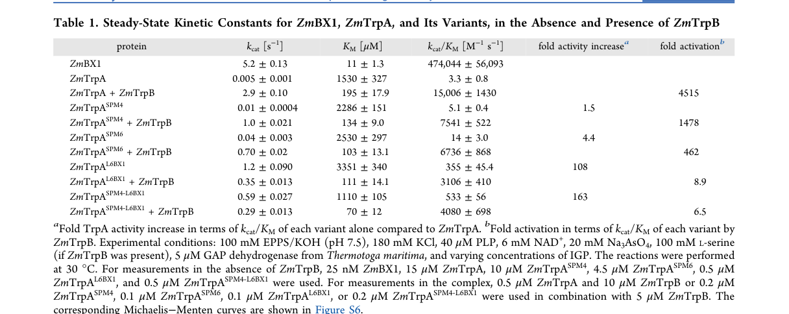

trpA encodes the alpha subunit of tryptophan synthase (EC 4.2.1.20), the enzyme catalyzing the final step of L-tryptophan biosynthesis. The alpha subunit carries out the retro-aldol (aldol) cleavage of (1S,2R)-1-C-(indol-3-yl)glycerol 3-phosphate (indole-3-glycerol phosphate) to yield indole and D-glyceraldehyde 3-phosphate. The indole intermediate is channeled through an internal intersubunit tunnel to the beta subunit (TrpB), where it is condensed with L-serine in a pyridoxal 5'-phosphate-dependent reaction to form L-tryptophan. The functional enzyme is a tetramer of two alpha and two beta chains (alpha-beta-beta-alpha), and the alpha and beta subunits mutually allosterically activate one another, with the alpha subunit having very low catalytic activity in isolation. In Pseudomonas putida KT2440, trpA (PP_0082) lies in a trpBA operon and is required for tryptophan prototrophy; disruption produces a tryptophan auxotroph. The protein is a soluble, cytosolic enzyme of the aromatic amino acid biosynthetic pathway, adopting a TIM-barrel (ribulose-phosphate-binding barrel) fold.
| GO Term | Evidence | Action | Reason |
|---|---|---|---|
|
GO:0000162
L-tryptophan biosynthetic process
|
IEA
GO_REF:0000120 |
ACCEPT |
Summary: Tryptophan synthase alpha subunit catalyzes the final (step 5/5) of L-tryptophan biosynthesis from chorismate. This biological process annotation is strongly supported by the conserved enzymology and by P. putida KT2440 genetics, where trpA disruption produces a tryptophan auxotroph.
Reason: Core biological process of the gene; supported by experimental auxotrophy data (Molina-Henares et al. 2009) and UniPathway/UniProt pathway assignment.
|
|
GO:0004834
tryptophan synthase activity
|
IEA
GO_REF:0000120 |
ACCEPT |
Summary: TrpA enables the alpha reaction of tryptophan synthase, the aldol cleavage of indole-3-glycerol phosphate to indole and glyceraldehyde 3-phosphate (EC 4.2.1.20, RHEA:10532). This is the canonical, conserved molecular function captured by HAMAP rule MF_00131 and InterPro family signatures.
Reason: Core molecular function, well supported by family/domain assignment (TrpA family, Pfam PF00290, TIGR00262) and EC/RHEA mapping. GO:0004834 is the standard term applied to both subunits of tryptophan synthase.
|
|
GO:0005829
cytosol
|
IEA
GO_REF:0000118 |
ACCEPT |
Summary: Tryptophan synthase is a soluble cytosolic enzyme complex; cytosolic localization is the expected compartment for this amino acid biosynthetic enzyme in bacteria and is consistent with the lack of any signal/membrane features in the sequence.
Reason: Consistent with the soluble nature of the tryptophan synthase complex and the cytosolic localization of aromatic amino acid biosynthesis. Phylogeny-based (TreeGrafter) inference is reasonable for this conserved cytosolic enzyme.
|
Q: Is the indole intermediate fully channeled to TrpB in P. putida KT2440, or can free indole accumulate under any physiological conditions?
Experiment: Complementation of the trpA auxotroph with wild-type and active-site mutant alleles to confirm catalytic residues (e.g., the conserved proton-acceptor residues) in the P. putida enzyme.
The research report should be a detailed narrative explaining the function, biological processes, and localization of the gene product. Citations should be given for all claims.
You should prioritize authoritative reviews and primary scientific literature when conducting research. You can supplement
this with annotations you find in gene/protein databases, but these can be outdated or inaccurate.
We are specifically interested in the primary function of the gene - for enzymes, what reaction is catalyzed, and what is the substrate specificity? For transporters, what is the substrate? For structural proteins or adapters, what is the broader structural role? For signaling molecules, what is the role in the pathway.
We are interested in where in or outside the cell the gene product carries out its function.
We are also interested in the signaling or biochemical pathways in which the gene functions. We are less interested in broad pleiotropic effects, except where these elucidate the precise role.
Include evidence where possible. We are interested in both experimental evidence as well as inference from structure, evolution, or bioinformatic analysis. Precise studies should be prioritized over high-throughput, where available.
The target protein UniProt Q88RP7 is annotated as tryptophan synthase α chain (TrpA; EC 4.2.1.20) from Pseudomonas putida strain KT2440, with ordered locus name PP_0082 (gene trpA). The KT2440 gene PP0082 was experimentally linked to the tryptophan synthase α-subunit by (i) sequence similarity (“high similarity to trpA” by BLAST) and (ii) functional genetics, where a mini‑Tn5 insertion near the start of PP0082 produced a tryptophan auxotroph, consistent with loss of TrpA function. (molinahenares2009functionalanalysisof pages 2-4)
TrpA is the α-subunit of tryptophan synthase, a canonical bacterial enzyme complex (often αββα) catalyzing the final steps of L‑tryptophan biosynthesis. TrpA performs the indole-generating step, producing indole that is subsequently used by the β‑subunit (TrpB) to make L‑tryptophan. (duran2024alteringactivesiteloop pages 1-2, lambert2026sequencebasedgenerativeai pages 3-5)
TrpA catalyzes the retro‑aldol cleavage (lyase reaction; EC 4.2.1.20) of indole‑3‑glycerol phosphate (IGP; also written I3GP) to yield indole and D‑glyceraldehyde‑3‑phosphate (G3P). (duran2024alteringactivesiteloop pages 1-2)
Mechanistically, recent synthesis of experimental/computational work describes a “push–pull” general acid–base mechanism involving Asp61 and Glu50 (numbering as discussed in that work’s TrpA models) and emphasizes that TrpA catalysis depends on access to a closed, catalytically activated conformational state. (duran2024alteringactivesiteloop pages 1-2, duran2024alteringactivesiteloop pages 3-4)
A defining feature of tryptophan synthase is substrate channeling: indole produced at TrpA is transported through an internal intersubunit tunnel to the TrpB active site. One recent synthesis/engineering paper describes a ~20–25 Å substrate tunnel that channels indole from TrpA to TrpB. (lambert2026sequencebasedgenerativeai pages 1-3, lambert2026sequencebasedgenerativeai pages 3-5)
TrpA and TrpB are also mutually allosterically activating: binding and catalytic events in one subunit influence the conformational ensemble and catalytic competence of the other. Contemporary mechanistic discussions emphasize that open (low-activity) vs closed (high-activity) state transitions regulate ligand binding, intermediate stabilization, and product release across the complex. (duran2024alteringactivesiteloop pages 1-2, lambert2026sequencebasedgenerativeai pages 3-5)
In P. putida KT2440, trpA (PP0082) is clustered with trpB (PP0083 in the cited KT2440 organization) and the two genes overlap by one nucleotide, forming a trpBA operon confirmed by RT‑PCR. The adjacent regulator trpI (PP0084) is divergently transcribed and is monocistronic. (molinahenares2009functionalanalysisof pages 2-4)
This arrangement—trpBA divergently transcribed from trpI—is consistent with a regulatory module in which TrpI controls expression of the tryptophan synthase subunits. (molinahenares2009functionalanalysisof pages 2-4)
Disrupting PP0082/trpA yields tryptophan auxotrophy. A mini‑Tn5 insertion at the 7th codon of PP0082 produced a Trp‑requiring mutant (“Aux‑1”) in KT2440. (molinahenares2009functionalanalysisof pages 2-4, molinahenares2009functionalanalysisof pages 1-2)
A separate phenotypic characterization reported that a trpA mutant grew on minimal medium only when L‑tryptophan (0.6 mM) was supplied, consistent with TrpA being essential for endogenous tryptophan biosynthesis under those conditions. (molinahenares2009functionalanalysisof pages 4-6)
A KT2440-derived transcriptional system PpTrpI/PPP_RS00425 (from the trpIAB locus, with locus tags reported as trpI PP_RS00430, trpA PP_RS00420, trpB PP_RS00425) was characterized as indole-inducible and used as a portable whole-cell biosensor module in heterologous hosts. (matulis2022developmentandcharacterization pages 2-4)
Quantitatively, this TrpI-based system achieved up to 639.6‑fold induction and showed a linear response over approximately 0.4–5 mM indole (with fitted inducer Km values in the ~0.9–1.8 mM range depending on host/medium). (matulis2022developmentandcharacterization pages 1-2, matulis2022developmentandcharacterization pages 4-6)
No direct subcellular localization experiments (e.g., fluorescent tagging, fractionation) were present in the retrieved full-text excerpts. However, the function of TrpA as a core enzyme in amino-acid biosynthesis and its role as a soluble subunit in a cytosolic enzyme complex strongly supports cytosolic localization in bacteria. This inference is consistent with its described participation in the soluble tryptophan synthase complex and with the cytosolic nature of indole channeling between TrpA and TrpB. (duran2024alteringactivesiteloop pages 1-2, lambert2026sequencebasedgenerativeai pages 3-5)
A 2024 ACS Catalysis study dissected how two active-site loops (loop 2 and loop 6) coordinate transitions between open and closed conformations to enable catalysis and product release. It identifies formation of a catalytically activated enzyme–substrate state as rate-limiting and reports structural/distance metrics (e.g., positioning of a catalytic Asp relative to indole N1) that mark catalytically competent states. (duran2024alteringactivesiteloop pages 3-4)
A central quantitative result is the dramatic dependence of TrpA activity on TrpB: ZmTrpA has extremely low standalone activity (kcat 0.005 s−1; KM 1530 μM; kcat/KM 3.3 M−1 s−1) but in complex with TrpB reaches kcat 2.9 s−1; KM 195 μM; kcat/KM 15,006 M−1 s−1, corresponding to ~4515‑fold activation. (duran2024alteringactivesiteloop pages 3-4)
The authors further report a computationally designed TrpA variant with 163‑fold improved catalytic efficiency for IGP cleavage, illustrating how conformational ensemble engineering can partially decouple TrpA from obligatory TrpB activation. (duran2024alteringactivesiteloop pages 1-2)
Evidence from the paper’s Table 1 and conformational analysis figure supports these quantitative comparisons. (duran2024alteringactivesiteloop media 8730a16f, duran2024alteringactivesiteloop media 001701b4)
A 2024 review of indole biotechnology highlights that some bacterial TrpA homologs can function as bona fide indole‑3‑glycerol phosphate lyases capable of producing indole without the canonical TrpB partner under certain engineering contexts, and that engineered pathways plus in situ product removal can overcome indole toxicity to reach multi‑g/L titers. (ferrer2024indolesandthe pages 7-9)
Complementing this, 2024 work in biocatalysis shows how the tryptophan synthase system—especially TrpB—has become a platform for creating noncanonical amino acids and even reprogramming chemistry toward tyrosine analog synthesis, underscoring the modern view that the TrpA/TrpB scaffold is a tunable biocatalyst chassis rather than only a “housekeeping” biosynthetic enzyme. (almhjell2024theβsubunitof pages 1-2)
Metabolic engineering in P. putida KT2440 has leveraged the tryptophan pathway branchpoint to produce aromatic chemicals such as anthranilate (o‑aminobenzoate; oAB), a tryptophan precursor. A 2015 study engineered KT2440 by deleting trpDC (blocking conversion of anthranilate onward toward tryptophan) and overexpressing a feedback‑insensitive DAHP synthase and an engineered anthranilate synthase, reaching 1.54 ± 0.3 g/L (11.23 mM) anthranilate from glucose in tryptophan-limited fed‑batch fermentation (with reported yields ~3.5–3.6% g/g under tested feed regimes). (kuepper2015metabolicengineeringof pages 1-2, kuepper2015metabolicengineeringof pages 6-7)
Although this is not a direct “TrpA product” application, it is a real KT2440 implementation demonstrating that the trp network (including downstream steps such as TrpA/TrpB) is an actionable control point in industrial strain design. (kuepper2015metabolicengineeringof pages 1-2)
Recent synthesis of industrial biotechnology reports multiple routes to indole and indole-derived products:
- De novo indole production in engineered microbes reached ~0.7 g/L, and with extraction/sequestration strategies could reach 1.4 g/L or 5.7 g/L. (ferrer2024indolesandthe pages 7-9)
- Indigo production has been demonstrated at scale (e.g., 911 mg/L in a 3000 L fermenter from L‑Trp feed in one process) and high-titer fed-batch processes (e.g., 18 g/L indigo reported in the review’s survey). (ferrer2024indolesandthe pages 7-9, ferrer2024indolesandthe pages 9-10)
- Related indole-derived products include indican (2.9 g/L) and indirubin (up to 233 mg/L in one cited context; and 56 mg/L in a de novo pathway with coproduced indigo). (ferrer2024indolesandthe pages 7-9, ferrer2024indolesandthe pages 9-10)
These applications connect directly to TrpA biology because IGP→indole chemistry (whether via TrpA or dedicated IGP lyases) controls flux into indole-derived value chains. (ferrer2024indolesandthe pages 7-9)
A 2024 ACS Catalysis study introduced a DNA aptamer-based L‑tryptophan sensor compatible with droplet microfluidics, enabling ultrahigh-throughput directed evolution of tryptophan synthase activity. Reported throughput reaches up to 10^7 experiments/day, and a proof-of-principle screen of ~100,000 variants recovered enzymes with ~5-fold improved catalytic efficiency. (scheele2024ultrahighthroughputevolution pages 1-2, scheele2024ultrahighthroughputevolution pages 2-4)
Given the KT2440 genetics (trpA disruption → Trp auxotrophy) and the conserved, well-defined enzymology of bacterial TrpA, the most defensible functional annotation for Q88RP7 is:
- Enzyme: tryptophan synthase α subunit (EC 4.2.1.20)
- Reaction: IGP → indole + G3P
- Pathway role: provides indole for the TrpB PLP-dependent condensation with L‑serine to form L‑tryptophan
- Complex behavior: functions as part of tryptophan synthase complex with strong allosteric coupling and indole channeling
This is supported by mechanistic synthesis describing TrpA’s reaction and TrpA–TrpB tunnel/allostery, and by P. putida KT2440 genetics/operon architecture establishing trpA as an essential tryptophan biosynthetic gene. (duran2024alteringactivesiteloop pages 1-2, lambert2026sequencebasedgenerativeai pages 3-5, molinahenares2009functionalanalysisof pages 2-4, molinahenares2009functionalanalysisof pages 4-6)
The evidence base here primarily supports the canonical TrpA substrate IGP (I3GP) and products indole + G3P. The reviewed biotechnology literature indicates that homologous TSAs can sometimes act as IGP lyases in engineered contexts and that indole flux can be rerouted to diverse derivatives; however, these are generally homolog- and context-dependent properties and should not be assigned to KT2440 TrpA without direct experimental demonstration in P. putida KT2440. (ferrer2024indolesandthe pages 7-9)
KT2440’s TrpI-associated regulatory locus provides a plausible link between indole/IGP availability and trp gene expression. The strong, quantifiable indole inducibility of a KT2440-derived TrpI/promoter module suggests this regulator–promoter pair is a potent sensor of indole-related metabolites, enabling both natural regulation and synthetic-biology reuse. (matulis2022developmentandcharacterization pages 1-2, matulis2022developmentandcharacterization pages 4-6)
The table below consolidates the most actionable quantitative findings relevant to TrpA function, regulation, and applications.
| Topic | System/Organism | Measurement (with units) | Value(s) | Notes/Context | Source (citation id) |
|---|---|---|---|---|---|
| TrpA reaction | Tryptophan synthase α-subunit (TrpA) | Catalyzed reaction | Indole-3-glycerol phosphate (IGP) → indole + D-glyceraldehyde-3-phosphate (G3P) | Retro-aldol cleavage step of tryptophan synthase; indole is transferred to TrpB through the intersubunit tunnel | (duran2024alteringactivesiteloop pages 1-2) |
| TrpA kinetics, standalone | ZmTrpA alone | kcat (s^-1); KM (μM); kcat/KM (M^-1 s^-1) | 0.005 ± 0.001; 1530 ± 327; 3.3 ± 0.8 | Very low standalone activity of α-subunit without TrpB partner | (duran2024alteringactivesiteloop pages 3-4, duran2024alteringactivesiteloop media 8730a16f) |
| TrpA kinetics, activated complex | ZmTrpA in complex with ZmTrpB | kcat (s^-1); KM (μM); kcat/KM (M^-1 s^-1) | 2.9 ± 0.10; 195 ± 17.9; 15,006 ± 1,430 | TrpB strongly activates TrpA catalysis allosterically | (duran2024alteringactivesiteloop pages 3-4, duran2024alteringactivesiteloop media 8730a16f) |
| TrpA activation by TrpB | ZmTrpA + ZmTrpB | Fold activation | 4515-fold | Reported increase in catalytic efficiency/activity upon complex formation | (duran2024alteringactivesiteloop pages 3-4, duran2024alteringactivesiteloop media 8730a16f) |
| Engineered standalone TrpA improvement | Designed ZmTrpA variant (ZmTrpASPM4-L6BX1) | Catalytic-efficiency improvement (fold) | 163-fold | Loop-dynamics engineering enhanced standalone IGP cleavage | (duran2024alteringactivesiteloop pages 1-2) |
| Indole-responsive regulation | PpTrpI/PPP_RS00425 from Pseudomonas putida KT2440 | Maximum induction (fold) | Up to 639.6-fold | Indole-inducible transcriptional system used to build whole-cell biosensors | (matulis2022developmentandcharacterization pages 1-2, matulis2022developmentandcharacterization pages 4-6, matulis2022developmentandcharacterization pages 8-9) |
| Indole-responsive regulation | PpTrpI/PPP_RS00425 from Pseudomonas putida KT2440 | Linear response range (mM indole) | ~0.4–5 mM | Reported linear dose-response window for biosensor output | (matulis2022developmentandcharacterization pages 1-2, matulis2022developmentandcharacterization pages 4-6) |
| Indole-responsive regulation | E. coli host carrying PpTrpI/PPP_RS00425 | Dynamic range (fold); Km (mM) | 373.5-fold in LB, Km 1.207; 639.6-fold in minimal medium, Km 1.347 | Host-dependent biosensor performance | (matulis2022developmentandcharacterization pages 4-6) |
| Indole-responsive regulation | Cupriavidus necator host carrying PpTrpI/PPP_RS00425 | Dynamic range (fold); Km (mM) | 101.4-fold in LB, Km 1.819; 11.9-fold in minimal medium, Km 0.9055 | Growth inhibition observed at >=0.125 mM indole in C. necator | (matulis2022developmentandcharacterization pages 4-6) |
| Indole production limitation | Prior microbial indole production | Titer (mM) | ~5 mM | Mentioned as an upper level in prior work, likely limited by indole toxicity | (matulis2022developmentandcharacterization pages 1-2) |
| Anthranilate biomanufacturing | Pseudomonas putida KT2440 engineered strain | Maximum anthranilate titer | 1.54 ± 0.3 g/L (11.23 mM) | Best strain: ΔtrpDC with aroGD146N + trpES40FG overexpression under tryptophan-limited fed-batch conditions | (kuepper2015metabolicengineeringof pages 1-2, kuepper2015metabolicengineeringof pages 5-6, kuepper2015metabolicengineeringof pages 6-7) |
| Anthranilate biomanufacturing | Pseudomonas putida KT2440 engineered strain | Shake-flask anthranilate titer | 0.25 ± 0.004 g/L (1.83 mM) | Initial production level before fed-batch optimization | (kuepper2015metabolicengineeringof pages 5-6) |
| Anthranilate biomanufacturing | Pseudomonas putida KT2440 engineered strain | Alternative fed-batch anthranilate titer | 1.0 ± 0.07 g/L | Achieved with different glucose:tryptophan feed regime | (kuepper2015metabolicengineeringof pages 5-6, kuepper2015metabolicengineeringof pages 6-7) |
| Anthranilate biomanufacturing | Pseudomonas putida KT2440 engineered strain | Product/substrate yield (g/g) | 3.6 ± 0.5% and 3.5 ± 0.5% | Reported for two fed conditions; yields were relatively similar | (kuepper2015metabolicengineeringof pages 6-7) |
| Droplet evolution platform | Directed evolution of TrpB in droplets | Throughput (experiments/day) | Up to 10^7/day | Ultrahigh-throughput droplet microfluidic screening with aptamer readout | (scheele2024ultrahighthroughputevolution pages 1-2) |
| Droplet evolution platform | Directed evolution of TrpB in droplets | Screened variants; improvement (fold) | ~100,000 variants screened; ~5-fold improved variants recovered | Demonstrated practical uHT enzyme evolution for tryptophan synthase | (scheele2024ultrahighthroughputevolution pages 1-2) |
| Droplet evolution platform | Directed evolution of TrpB in droplets | Variants/day; sensor signal-to-noise | ≈100,000 variants/day; ≈6-fold S/N at 5 mM Trp | CS-10 aptamer sensor performed best and was compatible with droplet incubation | (scheele2024ultrahighthroughputevolution pages 2-4) |
| De novo indole production | Engineered Corynebacterium glutamicum with trpA/IGL route | Indole titer (g/L) | ~0.7 g/L | Achieved with shikimate-producing background, trpB deletion, and in situ product removal | (ferrer2024indolesandthe pages 7-9) |
| De novo indole production | Engineered production with tributyrin extraction | Indole titer (g/L) | 1.4 g/L | In situ removal improved de novo indole accumulation | (ferrer2024indolesandthe pages 7-9) |
| De novo indole production | Engineered production with dibutyl sebacate sequestration | Indole titer (g/L) | 5.7 g/L | Higher final indole titer by mitigating toxicity/product loss | (ferrer2024indolesandthe pages 7-9) |
| Industrial indigo production | Biotransformation from 2 g/L L-Trp in 3000 L fermenter | Indigo titer (mg/L) | 911 mg/L | Demonstrates scale-up of indigo bioproduction | (ferrer2024indolesandthe pages 7-9) |
| Indigo production | Engineered system with fused FMO–tryptophanase | Indigo titer (g/L) | 1.7 g/L | Biotransformation route from L-tryptophan | (ferrer2024indolesandthe pages 7-9) |
| Indigo production | Engineered fed-batch process | Indigo titer (g/L) | 18 g/L | High-titer indigoid production reported in review | (ferrer2024indolesandthe pages 9-10) |
| Indican production | Engineered production system | Indican titer (g/L) | 2.9 g/L | Industrially relevant indole-derivative titer | (ferrer2024indolesandthe pages 7-9) |
| Indirubin production | Engineered production system | Indirubin titer (mg/L) | Up to 233 mg/L | Reported under cysteine supplementation | (ferrer2024indolesandthe pages 7-9) |
| De novo indirubin production | Engineered pathway with coproduced indigo | Indirubin titer (mg/L); Indigo coproduction (mg/L) | 56 mg/L indirubin; 640 mg/L indigo | Combined pathway engineering for indigoid products | (ferrer2024indolesandthe pages 9-10) |
| Halogenated indole production | Engineered Corynebacterium glutamicum / tryptophanase routes | Final titer (mg/L) | 16 mg/L 7-Cl-indole; 23 mg/L 7-Br-indole | Demonstrates extension of Trp/indole biomanufacturing to halogenated derivatives | (ferrer2024indolesandthe pages 9-10) |
Table: This table compiles the main quantitative findings relevant to TrpA/trpA function, regulation, and tryptophan/indole biomanufacturing from the gathered evidence. It is useful as a quick reference for kinetics, regulatory response ranges, engineered production titers, and throughput metrics from recent literature.
Additionally, Duran et al. (2024) provide a direct tabular/figure comparison of TrpA kinetic constants and conformational effects of TrpB binding, useful as mechanistic evidence for strong α–β allosteric activation. (duran2024alteringactivesiteloop media 8730a16f, duran2024alteringactivesiteloop media 001701b4)
References
(molinahenares2009functionalanalysisof pages 2-4): M. A. Molina-Henares, Adela García‐Salamanca, A. Molina-Henares, J. de la Torre, M. C. Herrera, J. Ramos, and E. Duque. Functional analysis of aromatic biosynthetic pathways in pseudomonas putida kt2440. Microbial biotechnology, 2:91-100, Dec 2009. URL: https://doi.org/10.1111/j.1751-7915.2008.00062.x, doi:10.1111/j.1751-7915.2008.00062.x. This article has 32 citations and is from a peer-reviewed journal.
(duran2024alteringactivesiteloop pages 1-2): Cristina Duran, Thomas Kinateder, Caroline Hiefinger, Reinhard Sterner, and Sílvia Osuna. Altering active-site loop dynamics enhances standalone activity of the tryptophan synthase alpha subunit. ACS Catalysis, 14:16986-16995, Nov 2024. URL: https://doi.org/10.1021/acscatal.4c04587, doi:10.1021/acscatal.4c04587. This article has 18 citations and is from a highest quality peer-reviewed journal.
(lambert2026sequencebasedgenerativeai pages 3-5): Théophile Lambert, Amin Tavakoli, Gautham Dharuman, Jason Yang, Vignesh C. Bhethanabotla, Sukhvinder Kaur, Matthew Hill, Arvind Ramanathan, Anima Anandkumar, and Frances H. Arnold. Sequence-based generative ai design of versatile tryptophan synthases. Nature Communications, Jan 2026. URL: https://doi.org/10.1038/s41467-026-68384-6, doi:10.1038/s41467-026-68384-6. This article has 5 citations and is from a highest quality peer-reviewed journal.
(duran2024alteringactivesiteloop pages 3-4): Cristina Duran, Thomas Kinateder, Caroline Hiefinger, Reinhard Sterner, and Sílvia Osuna. Altering active-site loop dynamics enhances standalone activity of the tryptophan synthase alpha subunit. ACS Catalysis, 14:16986-16995, Nov 2024. URL: https://doi.org/10.1021/acscatal.4c04587, doi:10.1021/acscatal.4c04587. This article has 18 citations and is from a highest quality peer-reviewed journal.
(lambert2026sequencebasedgenerativeai pages 1-3): Théophile Lambert, Amin Tavakoli, Gautham Dharuman, Jason Yang, Vignesh C. Bhethanabotla, Sukhvinder Kaur, Matthew Hill, Arvind Ramanathan, Anima Anandkumar, and Frances H. Arnold. Sequence-based generative ai design of versatile tryptophan synthases. Nature Communications, Jan 2026. URL: https://doi.org/10.1038/s41467-026-68384-6, doi:10.1038/s41467-026-68384-6. This article has 5 citations and is from a highest quality peer-reviewed journal.
(molinahenares2009functionalanalysisof pages 1-2): M. A. Molina-Henares, Adela García‐Salamanca, A. Molina-Henares, J. de la Torre, M. C. Herrera, J. Ramos, and E. Duque. Functional analysis of aromatic biosynthetic pathways in pseudomonas putida kt2440. Microbial biotechnology, 2:91-100, Dec 2009. URL: https://doi.org/10.1111/j.1751-7915.2008.00062.x, doi:10.1111/j.1751-7915.2008.00062.x. This article has 32 citations and is from a peer-reviewed journal.
(molinahenares2009functionalanalysisof pages 4-6): M. A. Molina-Henares, Adela García‐Salamanca, A. Molina-Henares, J. de la Torre, M. C. Herrera, J. Ramos, and E. Duque. Functional analysis of aromatic biosynthetic pathways in pseudomonas putida kt2440. Microbial biotechnology, 2:91-100, Dec 2009. URL: https://doi.org/10.1111/j.1751-7915.2008.00062.x, doi:10.1111/j.1751-7915.2008.00062.x. This article has 32 citations and is from a peer-reviewed journal.
(matulis2022developmentandcharacterization pages 2-4): Paulius Matulis, Ingrida Kutraite, Ernesta Augustiniene, Egle Valanciene, Ilona Jonuskiene, and Naglis Malys. Development and characterization of indole-responsive whole-cell biosensor based on the inducible gene expression system from pseudomonas putida kt2440. International Journal of Molecular Sciences, 23:4649, Apr 2022. URL: https://doi.org/10.3390/ijms23094649, doi:10.3390/ijms23094649. This article has 8 citations.
(matulis2022developmentandcharacterization pages 1-2): Paulius Matulis, Ingrida Kutraite, Ernesta Augustiniene, Egle Valanciene, Ilona Jonuskiene, and Naglis Malys. Development and characterization of indole-responsive whole-cell biosensor based on the inducible gene expression system from pseudomonas putida kt2440. International Journal of Molecular Sciences, 23:4649, Apr 2022. URL: https://doi.org/10.3390/ijms23094649, doi:10.3390/ijms23094649. This article has 8 citations.
(matulis2022developmentandcharacterization pages 4-6): Paulius Matulis, Ingrida Kutraite, Ernesta Augustiniene, Egle Valanciene, Ilona Jonuskiene, and Naglis Malys. Development and characterization of indole-responsive whole-cell biosensor based on the inducible gene expression system from pseudomonas putida kt2440. International Journal of Molecular Sciences, 23:4649, Apr 2022. URL: https://doi.org/10.3390/ijms23094649, doi:10.3390/ijms23094649. This article has 8 citations.
(duran2024alteringactivesiteloop media 8730a16f): Cristina Duran, Thomas Kinateder, Caroline Hiefinger, Reinhard Sterner, and Sílvia Osuna. Altering active-site loop dynamics enhances standalone activity of the tryptophan synthase alpha subunit. ACS Catalysis, 14:16986-16995, Nov 2024. URL: https://doi.org/10.1021/acscatal.4c04587, doi:10.1021/acscatal.4c04587. This article has 18 citations and is from a highest quality peer-reviewed journal.
(duran2024alteringactivesiteloop media 001701b4): Cristina Duran, Thomas Kinateder, Caroline Hiefinger, Reinhard Sterner, and Sílvia Osuna. Altering active-site loop dynamics enhances standalone activity of the tryptophan synthase alpha subunit. ACS Catalysis, 14:16986-16995, Nov 2024. URL: https://doi.org/10.1021/acscatal.4c04587, doi:10.1021/acscatal.4c04587. This article has 18 citations and is from a highest quality peer-reviewed journal.
(ferrer2024indolesandthe pages 7-9): Lenny Ferrer, Melanie Mindt, Volker F. Wendisch, and Katarina Cankar. Indoles and the advances in their biotechnological production for industrial applications. Systems Microbiology and Biomanufacturing, 4:511-527, Dec 2024. URL: https://doi.org/10.1007/s43393-023-00223-x, doi:10.1007/s43393-023-00223-x. This article has 34 citations.
(almhjell2024theβsubunitof pages 1-2): Patrick J. Almhjell, Kadina E. Johnston, Nicholas J. Porter, Jennifer L. Kennemur, Vignesh C. Bhethanabotla, Julie Ducharme, and Frances H. Arnold. The β-subunit of tryptophan synthase is a latent tyrosine synthase. Nature chemical biology, 20:1086-1093, May 2024. URL: https://doi.org/10.1038/s41589-024-01619-z, doi:10.1038/s41589-024-01619-z. This article has 37 citations and is from a highest quality peer-reviewed journal.
(kuepper2015metabolicengineeringof pages 1-2): Jannis Kuepper, Jasmin Dickler, Michael Biggel, Swantje Behnken, Gernot Jäger, Nick Wierckx, and Lars M. Blank. Metabolic engineering of pseudomonas putida kt2440 to produce anthranilate from glucose. Frontiers in Microbiology, Nov 2015. URL: https://doi.org/10.3389/fmicb.2015.01310, doi:10.3389/fmicb.2015.01310. This article has 66 citations and is from a peer-reviewed journal.
(kuepper2015metabolicengineeringof pages 6-7): Jannis Kuepper, Jasmin Dickler, Michael Biggel, Swantje Behnken, Gernot Jäger, Nick Wierckx, and Lars M. Blank. Metabolic engineering of pseudomonas putida kt2440 to produce anthranilate from glucose. Frontiers in Microbiology, Nov 2015. URL: https://doi.org/10.3389/fmicb.2015.01310, doi:10.3389/fmicb.2015.01310. This article has 66 citations and is from a peer-reviewed journal.
(ferrer2024indolesandthe pages 9-10): Lenny Ferrer, Melanie Mindt, Volker F. Wendisch, and Katarina Cankar. Indoles and the advances in their biotechnological production for industrial applications. Systems Microbiology and Biomanufacturing, 4:511-527, Dec 2024. URL: https://doi.org/10.1007/s43393-023-00223-x, doi:10.1007/s43393-023-00223-x. This article has 34 citations.
(scheele2024ultrahighthroughputevolution pages 1-2): Remkes A. Scheele, Yanik Weber, Friederike E. H. Nintzel, Michael Herger, Tomasz S. Kaminski, and Florian Hollfelder. Ultrahigh throughput evolution of tryptophan synthase in droplets via an aptamer sensor. ACS Catalysis, 14:6259-6271, Apr 2024. URL: https://doi.org/10.1021/acscatal.4c00230, doi:10.1021/acscatal.4c00230. This article has 17 citations and is from a highest quality peer-reviewed journal.
(scheele2024ultrahighthroughputevolution pages 2-4): Remkes A. Scheele, Yanik Weber, Friederike E. H. Nintzel, Michael Herger, Tomasz S. Kaminski, and Florian Hollfelder. Ultrahigh throughput evolution of tryptophan synthase in droplets via an aptamer sensor. ACS Catalysis, 14:6259-6271, Apr 2024. URL: https://doi.org/10.1021/acscatal.4c00230, doi:10.1021/acscatal.4c00230. This article has 17 citations and is from a highest quality peer-reviewed journal.
(matulis2022developmentandcharacterization pages 8-9): Paulius Matulis, Ingrida Kutraite, Ernesta Augustiniene, Egle Valanciene, Ilona Jonuskiene, and Naglis Malys. Development and characterization of indole-responsive whole-cell biosensor based on the inducible gene expression system from pseudomonas putida kt2440. International Journal of Molecular Sciences, 23:4649, Apr 2022. URL: https://doi.org/10.3390/ijms23094649, doi:10.3390/ijms23094649. This article has 8 citations.
(kuepper2015metabolicengineeringof pages 5-6): Jannis Kuepper, Jasmin Dickler, Michael Biggel, Swantje Behnken, Gernot Jäger, Nick Wierckx, and Lars M. Blank. Metabolic engineering of pseudomonas putida kt2440 to produce anthranilate from glucose. Frontiers in Microbiology, Nov 2015. URL: https://doi.org/10.3389/fmicb.2015.01310, doi:10.3389/fmicb.2015.01310. This article has 66 citations and is from a peer-reviewed journal.
(molina‐henares2010identificationofconditionally pages 6-7): M. Antonia Molina‐Henares, Jesús De La Torre, Adela García‐Salamanca, A. Jesús Molina‐Henares, M. Carmen Herrera, Juan L. Ramos, and Estrella Duque. Identification of conditionally essential genes for growth of pseudomonas putida kt2440 on minimal medium through the screening of a genome‐wide mutant library. Environmental Microbiology, 12:1468-1485, Jun 2010. URL: https://doi.org/10.1111/j.1462-2920.2010.02166.x, doi:10.1111/j.1462-2920.2010.02166.x. This article has 89 citations and is from a domain leading peer-reviewed journal.

id: Q88RP7
gene_symbol: trpA
product_type: PROTEIN
status: DRAFT
taxon:
id: NCBITaxon:160488
label: Pseudomonas putida (strain ATCC 47054 / DSM 6125 / CFBP 8728 / NCIMB 11950 / KT2440)
description: trpA encodes the alpha subunit of tryptophan synthase (EC 4.2.1.20), the enzyme catalyzing the final step of L-tryptophan biosynthesis. The alpha subunit carries out the retro-aldol (aldol) cleavage of (1S,2R)-1-C-(indol-3-yl)glycerol 3-phosphate (indole-3-glycerol phosphate) to yield indole and D-glyceraldehyde 3-phosphate. The indole intermediate is channeled through an internal intersubunit tunnel to the beta subunit (TrpB), where it is condensed with L-serine in a pyridoxal 5'-phosphate-dependent reaction to form L-tryptophan. The functional enzyme is a tetramer of two alpha and two beta chains (alpha-beta-beta-alpha), and the alpha and beta subunits mutually allosterically activate one another, with the alpha subunit having very low catalytic activity in isolation. In Pseudomonas putida KT2440, trpA (PP_0082) lies in a trpBA operon and is required for tryptophan prototrophy; disruption produces a tryptophan auxotroph. The protein is a soluble, cytosolic enzyme of the aromatic amino acid biosynthetic pathway, adopting a TIM-barrel (ribulose-phosphate-binding barrel) fold.
existing_annotations:
- term:
id: GO:0000162
label: L-tryptophan biosynthetic process
evidence_type: IEA
original_reference_id: GO_REF:0000120
qualifier: involved_in
review:
summary: Tryptophan synthase alpha subunit catalyzes the final (step 5/5) of L-tryptophan biosynthesis from chorismate. This biological process annotation is strongly supported by the conserved enzymology and by P. putida KT2440 genetics, where trpA disruption produces a tryptophan auxotroph.
action: ACCEPT
reason: Core biological process of the gene; supported by experimental auxotrophy data (Molina-Henares et al. 2009) and UniPathway/UniProt pathway assignment.
- term:
id: GO:0004834
label: tryptophan synthase activity
evidence_type: IEA
original_reference_id: GO_REF:0000120
qualifier: enables
review:
summary: TrpA enables the alpha reaction of tryptophan synthase, the aldol cleavage of indole-3-glycerol phosphate to indole and glyceraldehyde 3-phosphate (EC 4.2.1.20, RHEA:10532). This is the canonical, conserved molecular function captured by HAMAP rule MF_00131 and InterPro family signatures.
action: ACCEPT
reason: Core molecular function, well supported by family/domain assignment (TrpA family, Pfam PF00290, TIGR00262) and EC/RHEA mapping. GO:0004834 is the standard term applied to both subunits of tryptophan synthase.
- term:
id: GO:0005829
label: cytosol
evidence_type: IEA
original_reference_id: GO_REF:0000118
qualifier: located_in
review:
summary: Tryptophan synthase is a soluble cytosolic enzyme complex; cytosolic localization is the expected compartment for this amino acid biosynthetic enzyme in bacteria and is consistent with the lack of any signal/membrane features in the sequence.
action: ACCEPT
reason: Consistent with the soluble nature of the tryptophan synthase complex and the cytosolic localization of aromatic amino acid biosynthesis. Phylogeny-based (TreeGrafter) inference is reasonable for this conserved cytosolic enzyme.
core_functions:
- description: Catalyzes the alpha reaction of tryptophan synthase, the aldol cleavage of indole-3-glycerol phosphate to indole and D-glyceraldehyde 3-phosphate, as the final step of L-tryptophan biosynthesis.
supported_by:
- reference_id: PMID:21261884
molecular_function:
id: GO:0004834
label: tryptophan synthase activity
directly_involved_in:
- id: GO:0000162
label: L-tryptophan biosynthetic process
locations:
- id: GO:0005829
label: cytosol
references:
- id: GO_REF:0000118
title: TreeGrafter-generated GO annotations
findings: []
- id: GO_REF:0000120
title: Combined Automated Annotation using Multiple IEA Methods
findings: []
- id: PMID:21261884
title: Functional analysis of aromatic biosynthetic pathways in Pseudomonas putida KT2440.
findings:
- statement: A mini-Tn5 insertion near the start of PP_0082 (trpA) produces a tryptophan auxotroph, demonstrating trpA is required for L-tryptophan biosynthesis; trpA forms a trpBA operon with trpB.
reference_section_type: RESULTS
reference_review:
relevance: HIGH
correctness: VERIFIED
review_notes: PMID recovered from DOI 10.1111/j.1751-7915.2008.00062.x (Molina-Henares et al., Microbial Biotechnology 2009) and PubMed-verified; title matches the cached publication. The previously cited PMID:19302569 was an invalid/wrong identifier (could not be resolved on PubMed) and has been corrected. Supports trpA essentiality for tryptophan prototrophy and trpBA operon structure in KT2440.
suggested_questions:
- question: Is the indole intermediate fully channeled to TrpB in P. putida KT2440, or can free indole accumulate under any physiological conditions?
suggested_experiments:
- description: Complementation of the trpA auxotroph with wild-type and active-site mutant alleles to confirm catalytic residues (e.g., the conserved proton-acceptor residues) in the P. putida enzyme.
{kind=link}